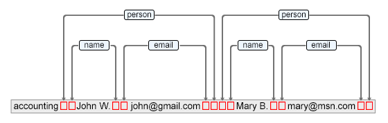

Package ro.sync.ecss.extensions.api.node
Interface AuthorNode
- All Known Subinterfaces:
AuthorDocument,AuthorElement,AuthorElementBaseInterface,AuthorParentNode,AuthorReferenceNode
@API(type=NOT_EXTENDABLE,
src=PUBLIC)
public interface AuthorNode
Base interface for all Author nodes.
The Author nodes model is similar with the DOM model with the difference
that the TEXT nodes do not exists in this model. The text from the document
is kept separately into a data structure similar to Content from Swing.
The nodes have start and end pointers into the Content, see
The author content contains the entire XML document text and special marker characters. Each author node points in the content to the start and end marker characters which are used to delimit it's range.
The image represents part of the document content and red markers represent special control characters which represent the node ranges.
getStartOffset()getEndOffset()The author content contains the entire XML document text and special marker characters. Each author node points in the content to the start and end marker characters which are used to delimit it's range.

The image represents part of the document content and red markers represent special control characters which represent the node ranges.
-
Field Summary
FieldsModifier and TypeFieldDescriptionstatic final StringName of CDATA node.static final StringName of COMMENT node.static final StringName of DOCUMENT node.static final StringName of PI node.static final StringName of the reference node.static final intCDATA node type.static final intComment node type.static final intDocument node type.static final intElement node type.static final intProcessing instruction node type.static final intPseudo DOCTYPE node type.static final intPseudo element node type.static final intReference node type (entity or other reference nodes, e.g.static final intText node type. -
Method Summary
Modifier and TypeMethodDescriptionReturn an iterator over the text content of this node.Returns the display name of the node used for visual representation.intReturns the offset in the content which marks the end of the node's range.getName()Returns the node name.Obtain access to the mappings from prefix to namespace and from namespace to prefix in the context of the current element.Returns the document to which this element belongs.intReturns the offset in the content which marks the start of the node's range.Returns the nodes text content.intgetType()Returns the node type.The returned URL represents the value of base URL in the current nodes context.booleanisDescendentOf(AuthorNode ancestor) See if this node is a descendant of the given node.
-
Field Details
-
NODE_TYPE_ELEMENT
static final int NODE_TYPE_ELEMENTElement node type. The value is 0.- See Also:
-
NODE_TYPE_TEXT
static final int NODE_TYPE_TEXTText node type. The value is 1.- See Also:
-
NODE_TYPE_DOCUMENT
static final int NODE_TYPE_DOCUMENTDocument node type. The value is 2.- See Also:
-
NODE_TYPE_COMMENT
static final int NODE_TYPE_COMMENTComment node type. The value is 3.- See Also:
-
NODE_TYPE_CDATA
static final int NODE_TYPE_CDATACDATA node type. The value is 4.- See Also:
-
NODE_TYPE_PI
static final int NODE_TYPE_PIProcessing instruction node type. The value is 5.- See Also:
-
NODE_TYPE_PSEUDO_ELEMENT
static final int NODE_TYPE_PSEUDO_ELEMENTPseudo element node type. The value is 6.- See Also:
-
NODE_TYPE_REFERENCE
static final int NODE_TYPE_REFERENCEReference node type (entity or other reference nodes, e.g.xincludeelements). The value is 7.- See Also:
-
NODE_TYPE_PSEUDO_DOCTYPE
static final int NODE_TYPE_PSEUDO_DOCTYPEPseudo DOCTYPE node type. The value is 8.- See Also:
-
NODE_NAME_CDATA
Name of CDATA node. The value is#cdata.- See Also:
-
NODE_NAME_COMMENT
Name of COMMENT node. The value is#comment.- See Also:
-
NODE_NAME_DOCUMENT
Name of DOCUMENT node. The value is#document.- See Also:
-
NODE_NAME_PI
Name of PI node. The value isprocessing-instruction.- See Also:
-
NODE_NAME_REFERENCE
Name of the reference node.- See Also:
-
-
Method Details
-
getOwnerDocument
AuthorDocument getOwnerDocument()Returns the document to which this element belongs.- Returns:
- The
AuthorDocumentto which this element belongs. Returnsnullif this element is part of a document fragment. For more details seeAuthorDocumentFragment.
-
isDescendentOf
See if this node is a descendant of the given node.- Parameters:
ancestor- TheAuthorNodetested to see if it is an ancestor of this node.- Returns:
trueif the given node is an ancestor of this node.
-
getType
int getType()Returns the node type. Can be one of the constants:NODE_TYPE_CDATA,NODE_TYPE_COMMENT,NODE_TYPE_DOCUMENT,NODE_TYPE_ELEMENT,NODE_TYPE_PI,NODE_TYPE_PSEUDO_DOCTYPE,NODE_TYPE_PSEUDO_ELEMENT,NODE_TYPE_REFERENCE.- Returns:
- The node type.
-
getStartOffset
int getStartOffset()Returns the offset in the content which marks the start of the node's range.
The author content contains the entire XML document text and special marker characters. Each author node points in the content to the start and end marker characters which are used to delimit it's range.
The image represents part of the document content and red markers represent special control characters which represent the node ranges.- Returns:
- The offset into the content corresponding to the start of the node, 0 based and inclusive.
-
getEndOffset
int getEndOffset()Returns the offset in the content which marks the end of the node's range.
The author content contains the entire XML document text and special marker characters. Each author node points in the content to the start and end marker characters which are used to delimit it's range.
The image represents part of the document content and red markers represent special control characters which represent the node ranges.- Returns:
- The offset into the content corresponding to the end of the node, 0 based and inclusive.
-
getName
String getName()Returns the node name. Depending on the node type the method returns:NODE_TYPE_ELEMENT- the qualified name of the elementNODE_TYPE_CDATA- the constantNODE_NAME_CDATANODE_TYPE_COMMENT- the constantNODE_NAME_COMMENTNODE_TYPE_DOCUMENT- the constantNODE_NAME_DOCUMENTNODE_TYPE_REFERENCE- the name of the entityNODE_TYPE_PI- the constantNODE_NAME_PI
- Returns:
- The name of the node.
-
getParent
AuthorNode getParent()- Returns:
- The
AuthorNoderepresenting the parent of this element, ornullif this is the document node.
-
getDisplayName
String getDisplayName()Returns the display name of the node used for visual representation.- Returns:
- The display name.
-
getXMLBaseURL
URL getXMLBaseURL()The returned URL represents the value of base URL in the current nodes context. It is resolved taking into account the values of all the'xml:base'attributes from the ancestors and the document URL if necessary.If no
'xml:base'attribute is present, the document system ID will be returned. See specification: http://www.w3.org/TR/xmlbase/.- Returns:
- The XML base URL.
-
getTextContent
Returns the nodes text content. The returned value is obtained by adding all the descendants text content. The special sentinel characters are removed.- Returns:
- The node text content.
- Throws:
BadLocationException- If the text content cannot be obtained.
-
getContentIterator
ContentIterator getContentIterator()Return an iterator over the text content of this node.
The content may contain special characters which have the value equal to 0. These special characters are the markers for content referenced by descendant nodes.
More about how Author Nodes point to the content:
- Returns:
- an iterator over the text content of this node.
- Since:
- 22
-
getNamespace
String getNamespace()- Returns:
- The node's namespace
-
getNamespaceContext
NamespaceContext getNamespaceContext()Obtain access to the mappings from prefix to namespace and from namespace to prefix in the context of the current element.- Returns:
- mappings from prefix to namespace and from namespace to prefix in the context of the current element.
- Since:
- 13
-